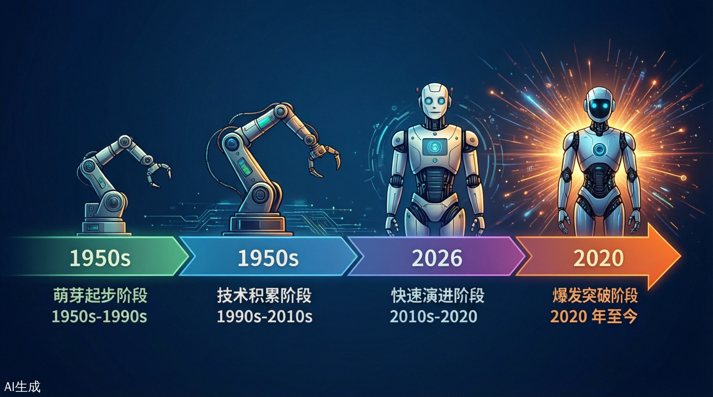
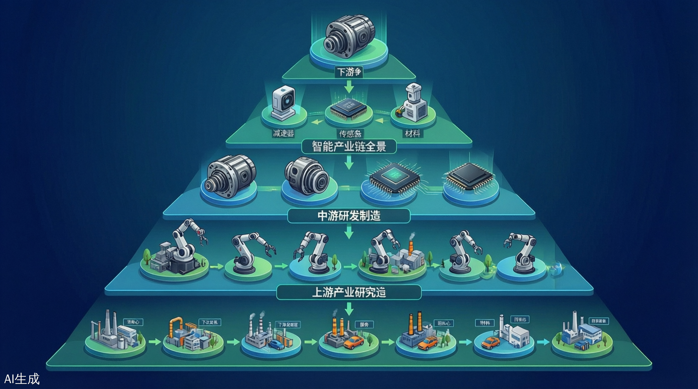
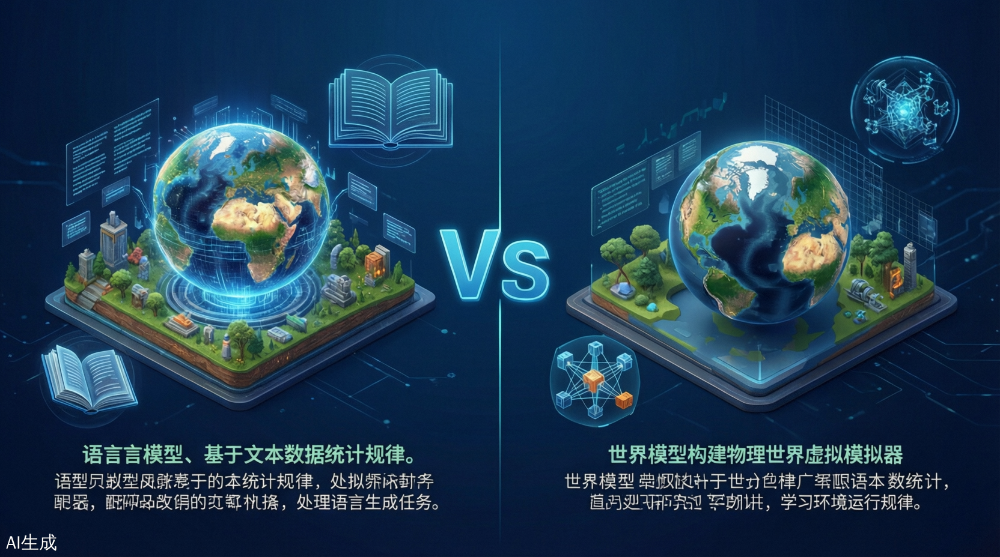

具身智能全景研究报告
Embodied AI Comprehensive Research Report 2026
📊 核心摘要
一、概述与定义
1.1 什么是具身智能
具身智能（Embodied AI，简称 EAI） 是人工智能领域的前沿方向，指通过物理实体（如机器人、无人车等）与环境实时交互，实现感知、决策、行动闭环的智能系统。
其核心在于将"大脑"（AI 决策）与"身体"（执行机构）深度融合，让智能体像人类一样在真实世界中学习、适应和执行任务。
1.2 核心概念辨析
| 概念 | 定义 | 特征 |
|---|---|---|
| 具身智能 (Embodied AI) | 有身体并支持物理交互的智能体 | "身体力行"——在物理世界执行任务 |
| 非具身智能 (Disembodied AI) | 没有物理身体，被动接受数据 | "纸上谈兵"——仅处理虚拟信息 |
| 具身智能机器人 | 满足具身智能能力的机器人 | 听懂语言→分解任务→识别物体→执行任务 |
1.3 四大核心要素
本体（Body）
- 实际的执行者，在物理或虚拟世界进行感知和任务执行
- 形态包括四足机器人、复合机器人、人形机器人等
- 具备环境感知能力、运动能力和操作执行能力
- 连接数字世界和物理世界的载体
智能体（Agent）
- 具身于本体之上的智能核心
- 负责感知、理解、决策、控制
- 深度网络模型驱动
- LLM+ 视觉的多模态模型成为新趋势
数据（Data）
- 数据是泛化的关键，稀缺且昂贵
- 需要 web-scale 级别的数据
- 行业场景高质量数据是关键支撑
学习和进化架构
- 通过与物理世界交互学习新知识
- 采用虚拟仿真环境加速演进
- Sim2Real 迁移是关键
1.4 与传统 AI 的区别
| 维度 | 传统 AI（如 ChatGPT） | 具身智能 |
|---|---|---|
| 存在形式 | 虚拟软件系统 | 物理实体 + 智能系统 |
| 数据来源 | 互联网采集的静态数据 | 第一视角实时感知数据 |
| 交互方式 | 文本/语音对话 | 物理动作 + 环境交互 |
| 学习能力 | 离线训练，在线推理 | 持续在线学习与进化 |
| 影响范围 | 数字世界 | 物理世界 |
二、发展历史与演进阶段

图 2-1：具身智能技术发展历程与里程碑事件（1950s-2026）
萌芽起步阶段
特征：没有大脑的躯体——早期工业机器人
- 1959 年：第一台工业机器人 Unimate 诞生
- 1950-1980 年代：机械臂用于重复性工业操作
- 理论基础：AI 三大学派形成（符号主义、连接主义、行为主义）
技术积累阶段
里程碑事件：
- 1991 年：MIT 推出 Genghis 六足机器人，实现自主行走
- 2002 年：iRobot 发布 Roomba 扫地机器人
- 2007 年：ROS 开源系统发布
- 2013 年：波士顿动力 Atlas 亮相
快速演进阶段
技术特征：
- 深度学习赋能机器人感知系统
- 人机协作从指令式向协作式转变
- 从小规模实验室应用向工业场景拓展
代表技术：视觉 - 力觉融合感知、3D 点云处理、自适应力控
爆发突破阶段
标志性进展：
- 大模型赋能：LLM、VLM 等多模态大模型为机器人注入"大脑"
- 人形机器人量产：特斯拉 Optimus、优必选 Walker S 等
- 通用劳动力愿景：从单一任务执行向通用智能体演进
关键转折点：2023-2024 年，GPT-4、PaLM-E 等模型发布
三、核心技术架构

图 3-1：具身智能四层技术架构（芯片层→硬件层→算法层→应用层）
3.1 整体技术框架
3.2 大脑与小脑架构
图 3-2：具身智能"大脑 + 小脑"协同架构与人类神经系统类比
🧠 大脑（认知决策层）
功能定位：复杂任务规划、多模态理解、语义推理
核心技术：LLM、VLM、MLLM
典型能力：
- 任务分解与编排
- 跨模态感知融合
- 长期记忆与个性化关怀
⚙️ 小脑（运动执行层）
功能定位：运动控制、平衡协调、精细操作
核心技术：强化学习、模仿学习、阻抗/导纳控制
典型能力：
- 直膝行走与地形适应
- 力控精度控制
- Sim2Real 迁移学习
3.3 自主决策两大范式
范式一：分层决策（Hierarchical Decision-Making）
流程：感知 → 高层规划 → 底层执行 → 反馈增强
高层规划方法
- 结构化语言：LLM 生成 PDDL 规划（LLM+P、PDDL-WM）
- 自然语言：SayCan、Text2Motion 用 RL 值函数过滤
- 编程语言：Code-as-Policy、Instruct2Act 转为 Python 代码
底层执行技术
- 传统 PID/MPC 控制
- 扩散模型输出连续轨迹（π₀、Octo）
- 结合 CLIP、SAM 等视觉 API
反馈闭环来源
- Self-Reflection：LLM 自评自改（Re-Prompting、Reflexion）
- 人类反馈：在线接受语言纠正（YAY Robot、IRAP）
- 环境反馈：多模态观测转自然语言再规划
范式二：端到端决策（Vision-Language-Action, VLA）
核心思想：直接映射多模态输入到动作输出
| 模型 | Tokenizer | 融合模块 | De-Tokenizer | 特点 |
|---|---|---|---|---|
| RT-2 | 视觉/语言/动作统一编码 | Cross-Attention | 离散动作解码 | Google 出品，泛化能力强 |
| OpenVLA | 多模态统一编码 | Transformer | 连续轨迹输出 | 开源社区主导 |
| Octo | 多模态编码 | Diffusion Head | 扩散策略 | 平滑精准 |
| π₀ | 流匹配编码 | Flow Matching | 连续解码 | 推理速度快 |
三大增强方向：
- 感知增强：BYO-VLA 运行时去噪、3D-VLA 引入点云
- 轨迹优化：Diffusion-VLA 用扩散头生成平滑轨迹
- 成本降低：TinyVLA 知识蒸馏 + 量化，边缘端 30ms 推理
3.4 具身学习关键技术
🎯 模仿学习（Imitation Learning）
扩散策略：Diffusion Policy、3D-Diffusion 用 U-Net 建模多模态动作分布，抗噪声、长程一致性好
Transformer 策略：RT-1、ALOHA、Mobile ALOHA 用 Decision Transformer 结构，端到端输出动作序列
🏆 强化学习（Reinforcement Learning）
| 痛点 | 大模型解法 | 代表工作 |
|---|---|---|
| 奖励函数设计难 | GPT-4 自动生成密集奖励 | Eureka、Text2Reward |
| 策略网络表达弱 | 扩散/Transformer/LLM作为策略 | Diffusion-QL、GLAM、LaMo |
进阶路径：PPO → SAC → 模仿学习 → 分层 RL
💻 仿真与数字孪生
高保真物理仿真平台：NVIDIA Isaac Sim、PyBullet、Gazebo、UnitreeSim（宇树自研）
核心价值：
- 24 小时不间断海量测试，加速算法迭代
- 合成数据生成（带精准标注的图像）
- 数字孪生同步：虚拟与现实状态同步
注意：合成数据与真实数据存在分布差异（Sim2Real Gap），需结合域自适应技术或少量真实数据微调。
3.5 世界模型（World Model）

图 3-3：世界模型与大语言模型的核心差异与融合趋势
核心本质：在"脑内"模拟物理世界，预测动作后果
| 路线 | 代表模型 | 特点 |
|---|---|---|
| Latent Space | RSSM → Dreamer 系列 | 低维潜空间预测 |
| Transformer | Genie、IRIS | 自注意力建模长程依赖 |
| Diffusion | UniPi、Sora | 像素空间生成未来帧 |
| JEPA | LeCun 提出 | 非生成式联合嵌入预测，强调常识推理 |
两大应用场景：
- 决策：在"脑内"模拟验证动作，降低真实交互成本（UniSim、NeBula）
- 学习：提供虚拟交互环境 + 合成数据，提升样本效率（SynthER、SWIM）
世界模型 vs LLM
| 维度 | LLM | World Model |
|---|---|---|
| 训练数据 | 文本 token | 像素/体素 + 物理规律 |
| 核心能力 | 语言理解与生成 | 物理世界模拟与预测 |
| 应用场景 | 虚拟世界（对话、写作） | 物理世界（机器人控制、自动驾驶） |
| 发展趋势 | 多模态融合 | 与大模型联合架构（MLLM-WM） |